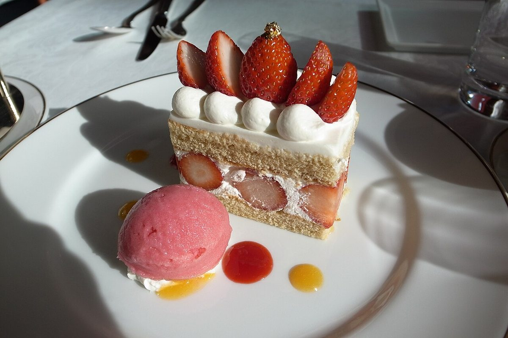
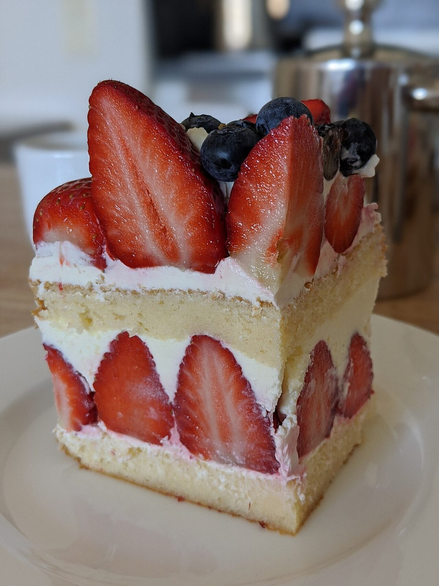
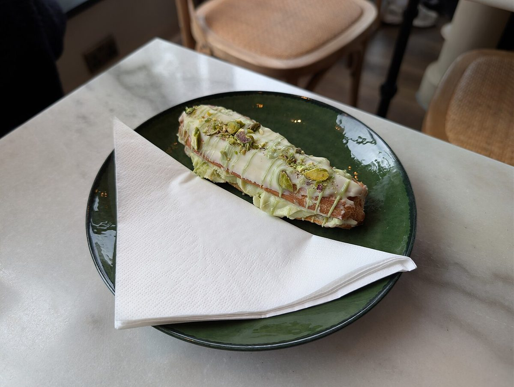
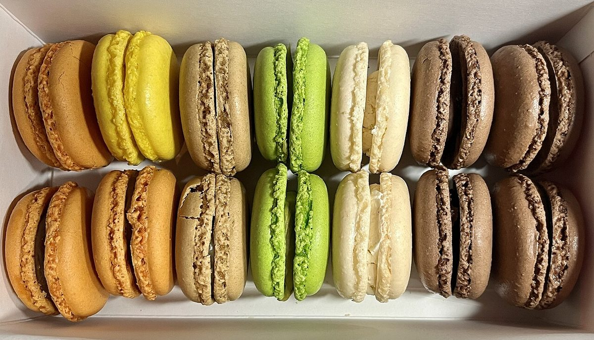

三重県鈴鹿市・道伯のスイーツカフェ
ATELIER NINE母と娘がつくった、
小さなスイーツのアトリエ。
築53年の元居酒屋を、パティシエの娘さんとお母さんが自分たちの手で改装して生まれた、鈴鹿のスイーツカフェです。

お店の由来
コロナ禍の帰国から、
親子ふたりのお店づくりへ。
クラウドファンディングのページによると、お店を営むのは、鈴鹿市で育ったパティシエの娘さんとお母さんです。製菓を学び、フランスへ留学していましたが、コロナ禍で予定より早く帰国。そのときにお母さんが「お店を開きたい」と言い出したことが、お店づくりの始まりとされています。
店舗は築53年の元居酒屋。ガス・水道・電気の工事を除いて、親子で改装を進めたと紹介されています。「鈴鹿を盛り上げたい」「長く愛されるお店にしたい」という想いが語られており、2021年5月8日にオープンしました。
情報源: CAMPFIRE(開店準備のプロジェクト) / 鈴鹿亀山ゴーガイネット(開店直後の紹介記事) / Instagram
店名の「9」の意味は確認できていません。このページの見出しなどの言い回しは制作側の表現です。

メニュー
ケーキと焼き菓子、そして一杯のコーヒー。
開店直後の紹介記事では、生ケーキ、「本日の贅沢パフェ」、焼き菓子(ブラウニーやクッキーなど)、ドリンクが紹介されていました。内容は変わることがあるため、下の写真は雰囲気をお伝えするイメージです。

Kirti Poddar / CC BY 2.0

Shisma / CC BY 4.0

Shisma / CC BY 4.0

Fran1812 / CC BY-SA 4.0

Andy Li / CC0

Andy Li / CC0

Kikaineko / CC BY-SA 3.0

Bernard Leprêtre / CC BY-SA 2.5

Benoît Prieur / CC0 1.0

sdnet01 / CC0

Stephanie McCabe / CC0 1.0

Katja Seaton (Katjaskupcakes) / CC BY 3.0
店内は小さく、2人がけテーブルとカウンター席のつくりと紹介されています。営業時間・定休日・ご予約は準備中です。最新情報はInstagramをご覧ください。
口コミ
こんな声が聞こえてきそうです。
元居酒屋だったとは思えない、落ち着いた空間でした。小さなお店なので、ゆっくり一皿を味わえました。
いちごのスイーツが目当てで伺いました。見た目もきれいで、写真を撮るのも楽しい時間でした。
焼き菓子をお土産に選びました。親子で営むお店と聞いて、また足を運びたくなりました。
上の3件は制作側が作成したイメージ例で、実際のお客様の声ではありません。
アクセス
鈴鹿市道伯の、小さなアトリエへ。
| 所在地 | 〒513-0823 三重県鈴鹿市道伯3丁目11-13 |
|---|---|
| 電話 | 準備中 |
| 営業時間 | 準備中 |
| 定休日 | 準備中(不定休と紹介されています。最新情報はInstagramへ) |
| @atelier_9_1 |